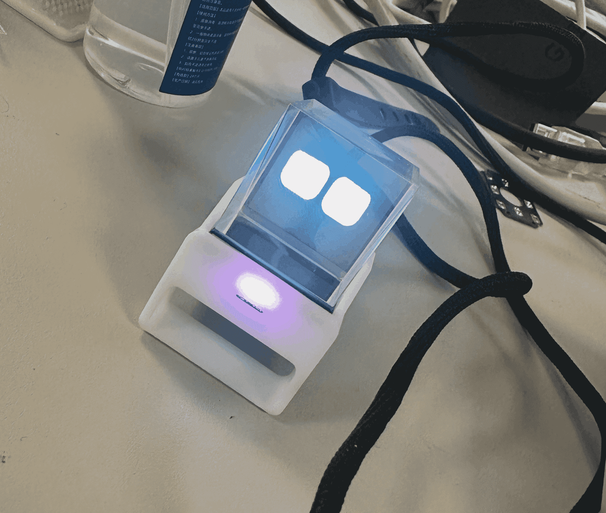

halo cubic
忙碌了小半个月，把大三时的愿望完成了。成功复刻了稚晖君的halo cubic；现在开启送礼计划，计划量产，送好朋友每人一个（优先女生朋友，Hhhh）。

本人生于2002年二月,因为从小对电脑 游戏 的兴趣走上了秃头程序员的道路。我是个 Geeker，喜欢倒腾一些莫名其妙的东西，不过常常失败就是了。
我对计算机视觉、深度学习、生成式 AI 和图像处理感兴趣。我的大部分工作都依据我的个人兴趣，有很多“烂尾工程”。我会尽量整理出来。
忙碌了小半个月，把大三时的愿望完成了。成功复刻了稚晖君的halo cubic；现在开启送礼计划，计划量产，送好朋友每人一个（优先女生朋友，Hhhh）。

附上最近的学习笔记。
Zmotion的运动控制板卡，配合驱动器实现对多轴（3轴）运动平台的控制。 厂家提供 C++ 的SDK，通过一些 DLL 封装可以实现通过 python 对板卡的驱动。仓库为整理的板卡控制资料，以及大致接线方式。
由于该 Dll 只支持 win64 ，我的平台是 macOS ，选择使用 windows11 虚拟机运行 dll 驱动与macOS通过共享文件方式通讯实现整体控制（类似 Linux 共享内存方式）。
另外仓库中包含摄像头采集、深度学习训练等代码。
TODO：待上传。
由Jon Barron项目二次开发而来。
主要内容：
1.编辑index.html后push到github自动部署到服务器；免去了服务商跑路，备份的烦恼。
2.子页面可以纯前端直接渲染Markdown内容，文章编写更加方便。
它们由hook.php和webhook功能以及marked（一个很流行的前端 Markdown 解析器）实现。具体见项目readme自述文件。
在大三接触了云服务器，兜兜转转经历国内备案等繁琐手续到注销备案，再到现在选择香港云虚拟主机。
今天，花费三元巨款购入香港云虚拟主机，搭建了这个网站。 2025.10.15, 现已免费托管至 render.com 。
在我整个本科四年学习生涯中，学习了很多技术，包括：
Linux系统编程、Linux网络编程、树莓派驱动、FOC、YOLO v1、ROS、JPEG编解码压缩和方块编码压缩等。
而许多项目因为各种原因（主要是懒）都不了了之。
之后我会对之前的内容进行整理发布。